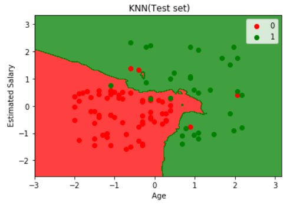
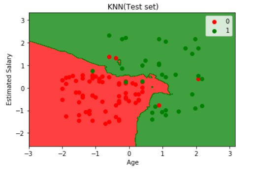

逻辑回归和KMN的实现
都是分类法
KNN：
逻辑回归
from sklearn.linear_model import LogisticRegression
classifier = LogisticRegression()
classifier.fit(X_train,Y_train)
KNN
from sklearn.neighbors import KNeighborsClassifier
classifier = KNeighborsClassifier(n_neighbors = 5, metric = 'minkowski', p = 2)
classifier.fit(X_train,Y_train)
Results
 

Logistic regression is linear, the edge is smmoth, KNN will find the cluster.